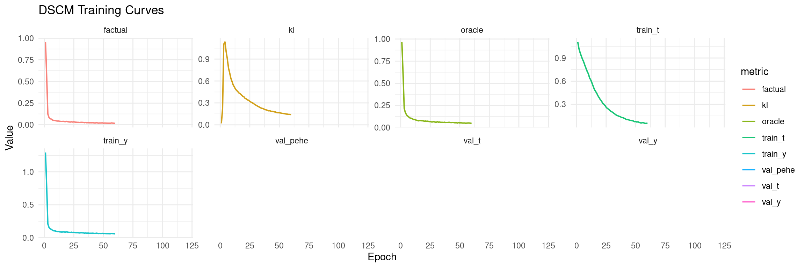
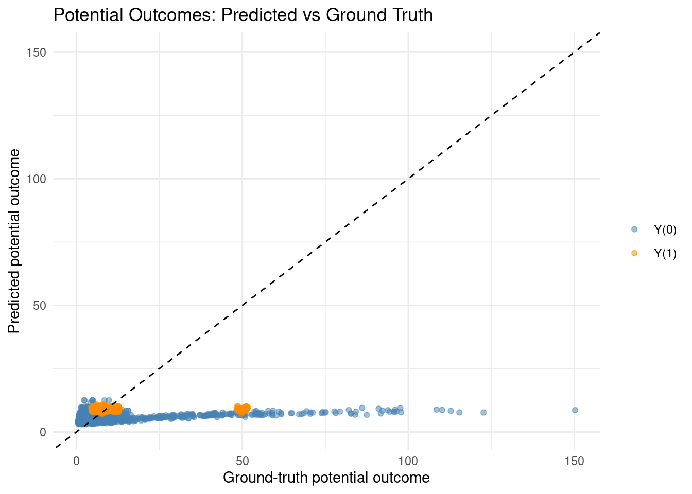
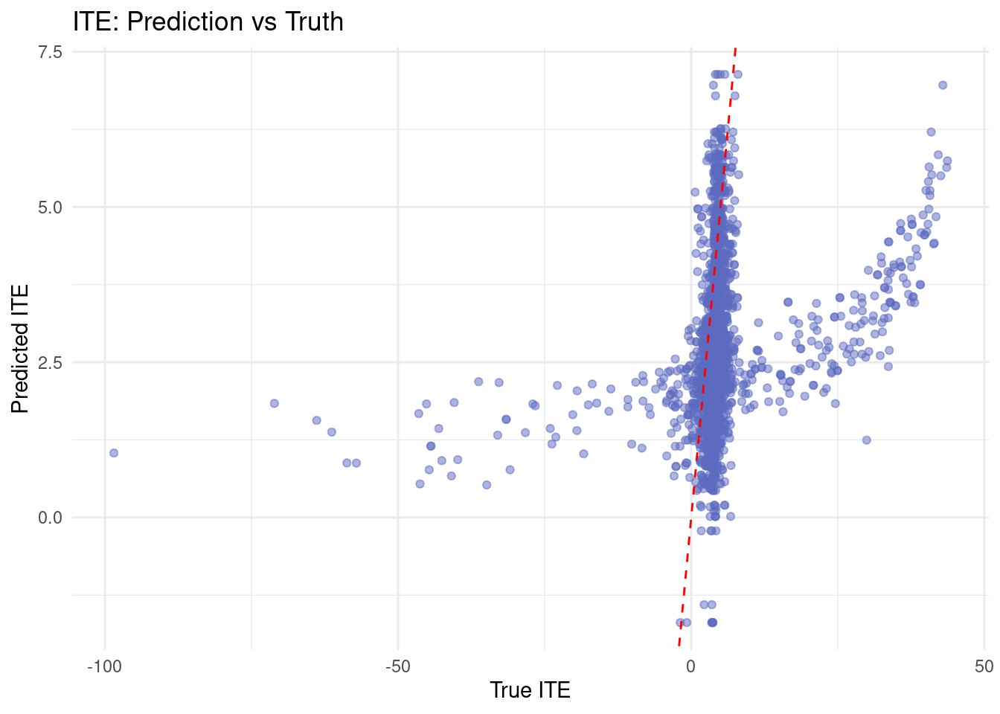

packages <- c(
"tidyverse",
"RCausalML",
"torch",
"causaldata",
"ForCausality",
"mlbench"
)Deep Structural Causal Models (DSCMs)
Deep Structural Causal Models (DSCMs) are an extension of classical Structural Causal Models (SCMs) from Judea Pearl’s framework, where the causal mechanisms (the structural equations) are parameterized using expressive deep generative models (DGMs) such as normalizing flows, variational autoencoders (VAEs), generative adversarial networks (GANs), or diffusion models.
They were popularized in the 2020 paper “Deep Structural Causal Models for Tractable Counterfactual Inference” by Pawlowski et al. (often cited as the foundational work) and comprehensively reviewed in the 2024 survey by Poinsot et al.
DSCMs combine the rigorous causal semantics of SCMs (which support interventional and counterfactual reasoning via Pearl’s “ladder of causation”) with the flexibility of deep learning to model complex, nonlinear, non-Gaussian, and high-dimensional data (e.g., images, 3D shapes, text).
Overview
A standard SCM \(\mathcal{M} = (\mathcal{F}, P(\mathbf{U}))\) is defined as:
- A set of structural equations (one per endogenous variable): \[ X_i := f_i(\mathrm{PA}(X_i), U_i) \quad \text{for } i = 1, \dots, d \] where \(\mathrm{PA}(X_i)\) are the parents of \(X_i\) in a known directed acyclic graph (DAG) \(\mathcal{G}\), and \(U_i\) are exogenous noise variables (often assumed independent in the Markovian case).
- A joint distribution \(P(\mathbf{U})\) over the noises.
The graph \(\mathcal{G}\) encodes causal dependencies, and the functions \(f_i\) define the mechanisms.
In a DSCM, each \(f_i\) (and sometimes the noise distribution) is replaced by a deep generative model. This makes the mechanisms highly expressive: - They can handle high-dimensional or structured data (e.g., entire MRI images as one variable). - They approximate arbitrary nonlinear functions thanks to the universal approximation property of neural networks.
The observational distribution \(P(\mathbf{X})\) is still generated by ancestral sampling along the DAG, but now with deep parameterizations.
Classification of DSCMs
DSCMs are typically classified along two axes (per the 2024 review):
1) SCM class (determines identifiability guarantees)
- Bijective Generation Mechanisms (BGM): Mechanisms are invertible/bijective (e.g., diffeomorphic flows). Supports hidden confounding in some cases and stronger \(\mathcal{L}_3\)-identifiability (counterfactuals).
- Neural Causal Models (NCM): Feedforward neural nets (non-diffusion). Exogenous noises often uniform; identifiability tied to the true SCM.
2) Deep Generative Model (DGM) class (determines abduction tractability)
- Invertible Explicit (e.g., conditional normalizing flows): Exact inversion for noises.
- Amortized Explicit (e.g., VAE/CVAE encoder-decoder): Encoder approximates posterior over noises.
- Amortized Implicit (e.g., GANs): Often uses rejection sampling.
Examples include NF-DSCM, Causal-NF (invertible), VACA, DCM (amortized explicit), and CausalGAN (implicit).
How DSCMs Work: Learning and Inference
DSCMs are learned from observational data (Level 1 of Pearl’s hierarchy) plus a known causal graph (Level 2). No interventional or counterfactual data is needed during training.
1) Learning the Model
- Parameterize each mechanism \(f_i\) with a deep net (flow, VAE decoder, GAN generator, etc.).
- Train via maximum likelihood (for flows), evidence lower bound (ELBO for VAEs), or adversarial objectives (GANs).
- The DAG structure constrains the architecture: each module only takes its parents as input.
- Result: An approximate SCM \(\widehat{\mathcal{M}}\) that matches the observational distribution well while respecting causality.
2) Causal Inference via Abduction–Action–Prediction (AAP)
This is the key procedure (Pearl’s three-step process) that DSCMs make tractable for complex data. Traditional deep generative models struggle with counterfactuals because they lack explicit noise abduction.
Abduction (infer personalized noises): Given observed factual data \(\mathbf{x}\), compute the posterior \(P(\mathbf{U} \mid \mathbf{X} = \mathbf{x})\).
- Invertible (flows): Deterministic inversion \(U_i = f_i^{-1}(x_i; \mathrm{pa}_i)\). Exact and efficient.
- Amortized explicit (VAE-style): Encoder \(Q(\mathbf{z} \mid \mathbf{x}, \mathrm{pa})\) approximates the latent posterior; low-level noise is often deterministic via inversion.
- Implicit: Rejection sampling or other approximations.
This step “personalizes” the model to the specific instance (e.g., “what latent factors explain this patient’s brain scan?”).
Action (Intervention): Apply a do-operator, e.g., \(do(X_k := \tilde{x}_k)\). This mutilates the graph (remove incoming edges to \(X_k\)) and replaces the mechanism for \(X_k\) with a constant or new function. The abducted noises \(\mathbf{U}\) remain fixed.
Prediction (Counterfactual): Sample descendants by propagating the same abducted noises through the intervened mechanisms. This yields the counterfactual distribution \(P(\mathbf{X} \mid \mathbf{X}_{\text{factual}}, do(\cdot))\).
AAP (Amortized explicit) — a representative form
Mathematically (from the original 2020 paper, for an amortized explicit mechanism):
\[ \begin{align*} z_k^{(s)} &\sim Q(z_k \mid e_k(x_k; \mathrm{pa}_k)) \\ u_k^{(s)} &= h_k^{-1}(x_k; g_k(z_k^{(s)}; \mathrm{pa}_k), \mathrm{pa}_k) \\ \tilde{x}_k^{(s)} &= \tilde{h}_k(u_k^{(s)}; \tilde{g}_k(z_k^{(s)}; \tilde{\mathrm{pa}}_k), \tilde{\mathrm{pa}}_k) \end{align*} \]
where tildes denote the post-intervention functions.
This enables queries like: - “What would this person’s brain MRI look like if they were older?” (intervene on age, keep noise fixed to preserve identity). - Counterfactual fairness, data augmentation, or “what if” scenarios in scientific simulation.
Key Advantages and Applications
- Captures nonlinear treatment assignment and response
- Supports both ATE and individual-level ITE estimation
- Provides explicit counterfactual generation via AAP
- Works naturally with semi-synthetic benchmark data (IHDP)
Challenges and Limitations
- Requires careful optimization and regularization
- Performance can be sensitive to architecture and training schedules
- Counterfactual validity still depends on causal assumptions (no hidden confounding, overlap, consistency)
Implementation in R
The notebook uses RCausalML::dscm() and predict.dscm() to reproduce the full Python tutorial flow with R-native code.
Setup
Load and Check Required Libraries
Install Missing Packages
# new_packages <- packages[!(packages %in% installed.packages()[, "Package"])]
# if (length(new_packages)) install.packages(new_packages)Verify Installation
cat("Installed packages:\n")Installed packages:print(sapply(packages, requireNamespace, quietly = TRUE)) tidyverse RCausalML torch causaldata ForCausality mlbench
TRUE TRUE TRUE TRUE TRUE TRUE Load Required Libraries
invisible(lapply(packages, function(pkg) {
suppressPackageStartupMessages(library(pkg, character.only = TRUE))
}))
if (!exists("dscm", where = asNamespace("RCausalML"), mode = "function")) {
stop("RCausalML::dscm() is not available. Reinstall/update RCausalML.")
}run_fast <- TRUE
device_use <- NULL
if (requireNamespace("torch", quietly = TRUE)) {
device_use <- if (torch::cuda_is_available()) "cuda" else "cpu"
}
set.seed(42)
if (requireNamespace("torch", quietly = TRUE)) torch::torch_manual_seed(42)
# Hyperparameters mapped from Python tutorial
BATCH_SIZE <- 256L
EPOCHS <- if (run_fast) 120L else 400L
LR <- 2e-4
WEIGHT_DECAY <- 1e-5
HIDDEN_DIM <- 256L
TREATMENT_HIDDEN_DIM <- 128L
LATENT_DIM <- 16L
DROPOUT <- 0.1
VAL_FRAC <- 0.15
PATIENCE <- 60L
KL_WARMUP_EPOCHS <- 80L
MAX_BETA <- 0.25
MAX_GRAD_NORM <- 5.0
LAMBDA_ORACLE <- 0.35Data (IHDP) and Preprocessing
The data section reuses the same IHDP loading and fallback strategy used in the CausalDiscrepancyVAE notebook.
base_url <- "https://raw.githubusercontent.com/uber/causalml/master/docs/examples/data"
cols <- c("treatment", "y_factual", "y_cfactual", "mu0", "mu1", paste0("X", 0:24))
df <- NULL
for (i in 1:9) {
url <- sprintf("%s/ihdp_npci_%d.csv", base_url, i)
tmp <- tryCatch({
read.csv(url, header = FALSE)
}, error = function(e) NULL)
if (!is.null(tmp) && nrow(tmp) > 0) {
colnames(tmp) <- cols[seq_len(ncol(tmp))]
if (is.null(df)) df <- tmp else df <- rbind(df, tmp)
}
}
if (!is.null(df) && nrow(df) > 0) {
replications <- if (run_fast) 2L else 10L
df <- do.call(rbind, replicate(replications, df, simplify = FALSE))
message("Loaded IHDP (all 9 files x ", replications, " replications): ", nrow(df), " x ", ncol(df))
} else {
df <- NULL
}Loaded IHDP (all 9 files x 2 replications): 13446 x 30if (is.null(df) || nrow(df) == 0) {
d <- tryCatch(
synthetic_data(mode = 1, n = 5000, p = 25, sigma = 1.0, adj = 0),
error = function(e) synthetic_data(mode = 1, n = 5000, p = 25, sigma = 1.0)
)
df <- as.data.frame(d$X)
colnames(df) <- paste0("X", 0:(ncol(df) - 1))
df$treatment <- d$w
df$y_factual <- d$y
df$y_cfactual <- ifelse(d$w == 1, d$b - 0.5 * d$tau, d$b + 0.5 * d$tau)
df$mu0 <- d$b - 0.5 * d$tau
df$mu1 <- d$b + 0.5 * d$tau
message("Using synthetic fallback: ", nrow(df), " x ", ncol(df))
}
# Feature order from source workflow:
# binary features first (Python 6-24 -> R 7-25), then continuous (0-5 -> R 1-6)
binfeats <- 7:25
contfeats <- 1:6
perm <- c(binfeats, contfeats)
xcols <- paste0("X", 0:24)
X <- as.matrix(df[, xcols][, perm])
treatment <- as.integer(df$treatment)
y <- as.numeric(df$y_factual)
y_cf <- as.numeric(df$y_cfactual)
mu0 <- as.numeric(df$mu0)
mu1 <- as.numeric(df$mu1)
cat("Rows:", nrow(X), "| Covariates:", ncol(X), "\n")Rows: 13446 | Covariates: 25 cat("Treatment prevalence:", round(mean(treatment), 3), "\n")Treatment prevalence: 0.186 # Train/test split (similar spirit to Python data split)
n <- nrow(X)
set.seed(42)
idx <- sample.int(n)
train_n <- floor(0.8 * n)
train_idx <- idx[1:train_n]
test_idx <- idx[(train_n + 1):n]
X_train <- X[train_idx, , drop = FALSE]
treatment_train <- treatment[train_idx]
y_train <- y[train_idx]
mu0_train <- mu0[train_idx]
mu1_train <- mu1[train_idx]
X_test <- X[test_idx, , drop = FALSE]
treatment_test <- treatment[test_idx]
y_test <- y[test_idx]
mu0_test <- mu0[test_idx]
mu1_test <- mu1[test_idx]
cat("Train size:", nrow(X_train), "| Test size:", nrow(X_test), "\n")Train size: 10756 | Test size: 2690 Feature Scaling
preprocess_features <- function(train_x, test_x) {
# Continuous columns are at positions 20:25 after binary-first permutation.
scaled_train <- train_x
scaled_test <- test_x
means <- colMeans(train_x[, 20:25, drop = FALSE])
sds <- apply(train_x[, 20:25, drop = FALSE], 2, sd)
sds[sds == 0] <- 1
scaled_train[, 20:25] <- scale(train_x[, 20:25, drop = FALSE], center = means, scale = sds)
scaled_test[, 20:25] <- scale(test_x[, 20:25, drop = FALSE], center = means, scale = sds)
list(train_x = scaled_train, test_x = scaled_test)
}
proc <- preprocess_features(X_train, X_test)
X_train_scaled <- proc$train_x
X_test_scaled <- proc$test_xWhat is the DSCM Model Here?
RCausalML::dscm() internally fits:
- a treatment network (analogous to Python
TreatmentNet) - an outcome DSCM module with latent abduction and potential heads (analogous to Python
OutcomeDSCM) - KL warmup, gradient clipping, and early stopping against validation objective
dscm_fit <- RCausalML::dscm(
X = X_train_scaled,
treatment = treatment_train,
y = y_train,
y0_true = mu0_train,
y1_true = mu1_train,
hidden_dim = HIDDEN_DIM,
treatment_hidden_dim = TREATMENT_HIDDEN_DIM,
latent_dim = LATENT_DIM,
dropout = DROPOUT,
num_epochs = EPOCHS,
batch_size = BATCH_SIZE,
learning_rate = LR,
weight_decay = WEIGHT_DECAY,
val_frac = VAL_FRAC,
kl_warmup_epochs = KL_WARMUP_EPOCHS,
max_beta = MAX_BETA,
lambda_oracle = LAMBDA_ORACLE,
patience = PATIENCE,
max_grad_norm = MAX_GRAD_NORM,
verbose = !run_fast,
device = device_use
)
history <- dscm_fit$history
cat("DSCM model fitted.\n")DSCM model fitted.Training Diagnostics
history_df <- dplyr::bind_rows(lapply(seq_along(history), function(i) {
h <- history[[i]]
tibble::tibble(
epoch = i,
beta = h$beta,
train_t = h$train_t,
train_y = h$train_y,
factual = h$factual,
kl = h$kl,
oracle = h$oracle,
val_t = h$val_t,
val_y = h$val_y,
val_pehe = h$val_pehe
)
}))
h_long <- tidyr::pivot_longer(
history_df,
cols = c(train_t, train_y, factual, kl, oracle, val_t, val_y, val_pehe),
names_to = "metric",
values_to = "value"
)
ggplot(h_long, aes(epoch, value, color = metric)) +
geom_line(linewidth = 0.7, alpha = 0.9) +
facet_wrap(~metric, scales = "free_y", nrow = 2) +
theme_minimal() +
labs(title = "DSCM Training Curves", x = "Epoch", y = "Value")Warning: Removed 660 rows containing missing values or values outside the scale range
(`geom_line()`).
Counterfactual Inference (Abduction -> Action -> Prediction)
Deterministic potential outcomes
po_pred <- predict(dscm_fit, X_test_scaled, type = "potential_outcomes")
y0_pred <- po_pred$y0
y1_pred <- po_pred$y1
ite_pred <- y1_pred - y0_pred
ite_true <- mu1_test - mu0_test
ate_pred <- mean(ite_pred)
ate_true <- mean(ite_true)
ate_error <- abs(ate_pred - ate_true)
pehe <- sqrt(mean((ite_pred - ite_true)^2))
rmse_y0 <- sqrt(mean((y0_pred - mu0_test)^2))
rmse_y1 <- sqrt(mean((y1_pred - mu1_test)^2))
cat("Estimated ATE error:", round(ate_error, 4), "\n")Estimated ATE error: 2.1249 cat("PEHE:", round(pehe, 4), "\n")PEHE: 8.4901 cat("RMSE Y(0):", round(rmse_y0, 4), "| RMSE Y(1):", round(rmse_y1, 4), "\n")RMSE Y(0): 13.3495 | RMSE Y(1): 13.3553 AAP-style counterfactuals with latent abduction
cf_treated <- predict(
dscm_fit,
X_test_scaled,
type = "counterfactual",
t_cf = 1,
use_abduction = TRUE,
t_obs = treatment_test,
y_obs = y_test,
n_samples = if (run_fast) 32L else 64L
)
cf_control <- predict(
dscm_fit,
X_test_scaled,
type = "counterfactual",
t_cf = 0,
use_abduction = TRUE,
t_obs = treatment_test,
y_obs = y_test,
n_samples = if (run_fast) 32L else 64L
)
ite_abduction <- cf_treated - cf_control
cat("Mean ITE (abduction-based):", round(mean(ite_abduction), 4), "\n")Mean ITE (abduction-based): 4.2401 Visualization
df_po <- tibble::tibble(
mu0_true = mu0_test,
mu1_true = mu1_test,
y0_pred = y0_pred,
y1_pred = y1_pred
)
lims <- range(c(df_po$mu0_true, df_po$mu1_true, df_po$y0_pred, df_po$y1_pred))
ggplot() +
geom_point(data = df_po, aes(mu0_true, y0_pred, color = "Y(0)"), alpha = 0.5) +
geom_point(data = df_po, aes(mu1_true, y1_pred, color = "Y(1)"), alpha = 0.5) +
geom_abline(slope = 1, intercept = 0, linetype = "dashed") +
coord_cartesian(xlim = lims, ylim = lims) +
scale_color_manual(values = c("Y(0)" = "steelblue", "Y(1)" = "darkorange")) +
theme_minimal() +
labs(
title = "Potential Outcomes: Predicted vs Ground Truth",
x = "Ground-truth potential outcome",
y = "Predicted potential outcome",
color = NULL
)
df_ite <- tibble::tibble(
ite_true = ite_true,
ite_pred = ite_pred
)
ggplot(df_ite, aes(ite_true, ite_pred)) +
geom_point(alpha = 0.5, color = "#5C6BC0") +
geom_abline(slope = 1, intercept = 0, linetype = "dashed", color = "red") +
theme_minimal() +
labs(
title = "ITE: Prediction vs Truth",
x = "True ITE",
y = "Predicted ITE"
)
Final Metrics
cat(strrep("=", 60), "\n")============================================================ cat("Deep Structural Causal Model (DSCM) Results\n")Deep Structural Causal Model (DSCM) Resultscat(strrep("=", 60), "\n")============================================================ cat("True ATE :", round(ate_true, 4), "\n")True ATE : 4.845 cat("Predicted ATE :", round(ate_pred, 4), "\n")Predicted ATE : 2.7201 cat("ATE Error :", round(ate_error, 4), "\n")ATE Error : 2.1249 cat("PEHE :", round(pehe, 4), "\n")PEHE : 8.4901 cat("RMSE Y(0) :", round(rmse_y0, 4), "\n")RMSE Y(0) : 13.3495 cat("RMSE Y(1) :", round(rmse_y1, 4), "\n")RMSE Y(1) : 13.3553 cat("Abduction ITE mean:", round(mean(ite_abduction), 4), "\n")Abduction ITE mean: 4.2401 cat(strrep("=", 60), "\n")============================================================ Summary and Conclusion
This notebook converts the full Python DSCM tutorial into an R-first workflow using {RCausalML}. The translated pipeline preserves the original modeling structure: IHDP data preparation, feature scaling, DSCM training with latent abduction, deterministic potential-outcome prediction, and AAP-style counterfactual generation.
On IHDP, the model estimates treatment effects through both potential-outcome heads and abduction-based intervention simulation, and evaluation includes ATE error, PEHE, and potential-outcome RMSE. This keeps the notebook aligned with common benchmark practice while showcasing an interpretable causal deep-learning workflow in R.